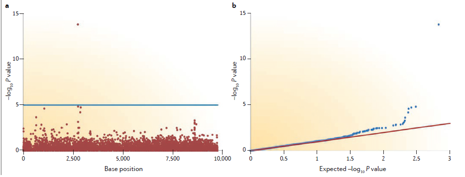
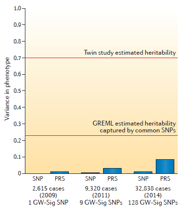

Microbial GWAS
Keypoints
全基因组关联研究Genome-wide association studies (GWAS) 在人类基因组数据分析中非常成功。微生物全基因组可用性的提高为微生物GWAS提供了机会。
最初的微生物GWAS已成功识别出一系列细菌，病毒和原生动物在强烈选择下的性状变异，例如耐药性。
微生物GWAS存在一些挑战，这些挑战可能会阻碍在适度选择条件下鉴定变体identifying variants。主要挑战是由于选择和复杂的重组模式selection and complex recombination patterns.，导致微生物种群分层population stratification增加。
专门针对微生物GWAS的需求量身定制的新型软件将大大加快该领域的发展。特别是，多基因方法polygenic methods的应用尚未在微生物中进行评估。
令人兴奋的未来研究领域是在同一样本中生成宿主和微生物基因组数据the generation of host and microbial genomics data within the same samples。这将允许对基因组进行基因组分析genome-to-genome analyses，以测试宿主与微生物之间的相互作用。
Data and methodology of GWAS
postulation: many high-frequency but low-effect variants contribute to disease risk
Each SNP is analysed, usually through linear or logistic regression, to determine whether one allele is significantly associated with the phenotype
通过回归的方法建立SNP和phenotype的correlation
- Owing to the co-inheritance of segments of the genome over generations, correlations (known as linkage disequilibrium (LD)) exist between genetic variants that are in close proximity.
在紧密接近的遗传变异之间存在相关性（称为连锁不平衡（LD））通过包括单个近端SNP来“标记”局部遗传变异，并根据已知的相关性推算未直接进行基因分型的其他SNP。
- Differences between human GWAS and microbial GWAS
主要不同在于the source of the genomic data
与人类GWAS的数据来自SNP基因分型芯片SNP genotyping chips不同，几乎所有微生物的基因组数据都来自测序sequencing
这影响了GWAS的多个方面，特别是SNP调用SNP calling，因为在微生物测序数据中检测到的SNP不仅将是双等位基因bi-allelic，而且还将是三等位基因和四等位基因tri-allelic and quad-allelic。这使变体调用variant calling，数据存储和分析变得复杂。在微生物GWAS中，将基因座与参考基因组匹配Matching loci to a reference genome的重要性也越来越高，以确保每个样品在同一位置调用SNP并在研究中进行比较。测序还会影响过滤SNP和单个样品必须采取的质量控制步骤quality control steps 。由于与研究中的样本数量相比，SNP数量众多，因此进行质量控制以优先排除低质量的SNP——去除具有较低次要等位基因频率low minor allele frequency，满足Hardy–Weinberg equilibrium。
Adapting GWAS to microbial variants
在微生物GWAS中始终不可能仅关注SNP的作用
- 微生物GWAS需要测试SNP与基因存在之间的这种差异
例如，在细菌中，重组可以引入新基因。
analysis of copy number variants (CNVs)
CNV是基因组部分的大型重复或缺失。
变体对该负担的贡献可以通过其预测的功能影响来加权。使用将多个遗传变异的影响合并为一个变量的定量负担，可能会提供用于分析微生物GWAS中基因存在与否以及稀有变异的统计方法。
analysing k-mers15
k-mers的好处是它们同时捕获共同的变异和基因存在。
- Within-host diversity will lead to non-discrete SNP calling
宿主内的多样性将导致非离散SNP调用，等位基因的频率反映宿主细胞内微生物序列上的频率，而不是等位基因的存在与否。尽管测试等位基因频率与表型之间的线性关联具有务实意义，但也存在非线性效应的可能性。
- lineage effects谱系效应
微生物的谱系或亚型可能是感兴趣的遗传单位，既可以是单独的，也可以是单个SNP或k-mers的作用之外的遗传单位。
Confounding factors in microbial GWAS
main challenge: identifying seemingly causal variants that are in fact false positives due to population structure & multiple testing
假阳性的因果变异
- population structure
人群结构混淆，GWAS将识别出仅能反映祖先而不是疾病生物学信息的预测性SNP。为了避免这个问题，人类GWAS通常将招募活动限制在族裔同质的人群ethnically homogeneous groups中。即使在相对同质的人口中，也会存在一些人口结构。这些人口分层的微妙影响通过主成分分析principal component analysis得以纠正。
- homologous recombination同源重组
在细菌和病毒中，通过替换短序列区块the replacement of short sequence blocks而不是沿着整个染色体的多次交换multiple crossovers along the whole chromosome。
这意味着远距离LD在微生物基因组中的分解方式有所不同，即使区域内的短距离LD减少了，长距离LD的变体也会相互保留。 这种长距离LD可能使因果变异的识别成为问题。
Methods that are designed for analysing historically ethnically mixed, or ‘admixed’, human populations may be helpful in this case, because they make use of recombination patterns to identify associated loci.
- microbial population structure can represent selection on the phenotype of interest
微生物种群结构可以代表对目标表型的选择，例如抗生素耐药性。考虑到跨微生物重组和选择频率的差异，随之而来的种群结构很可能从纯粹的克隆到近乎泛滥。此外，成功谱系的迅速传播可能会暂时减少它们与其他物种的重组。在选择力强的微生物中，最好在不同时间在单个宿主内使用重复的样品，例如比较预处理和后处理序列。
但是，这种方法不适用于纵向表型 longitudinal phenotypes，例如发展疾病症状所花费的时间，或在进化速率较低的微生物中。 在这些研究中，使用混合模型说明相关性或谱系效应，或基于系统发育结构识别基因组选择信号的方法，可能比典型的GWAS回归方法更具吸引力。
In these studies, methods that use mixed models to account for relatedness or lineage effects, or to identify signals of selection across the genome based on phylogenetic structure, may have more traction than typical GWAS regression methods.
Multiple testing and replication
- testing hundreds of thousands of SNPs leads to tens of thousands of SNPs being significant at P < 0.05 by chance alone.
被认为具有统计学意义的关联的标准截止值为P = 0.05，这表示随机发生的可能性为5％。但是，测试成千上万的SNP会导致成千上万的SNP仅凭偶然机会在P <0.05时有意义。为了说明测试的数量，SNP必须通过全基因组范围内的显着性临界值才能被认为具有显着性。在人类中，这通常是P <5E-824，这大约等于早期GWAS中分析的SNP数量的Bonferroni校正（多次测试校正）。但是，它继续用于更密集的基因分型和估算研究中。通过更深的基因分型或估算，GWAS中包含的其他SNP与已知的高LD处于较高的LD，因此SNP之间的相关性减少了进行的独立测试的数量。因此，了解SNP之间的LD水平对于计算正确的全基因组意义阈值很重要。即使严格限制了全基因组的重要性，确定关联是否代表假阳性仍然是有问题的。
- replication in an independent cohort
在独立队列中进行复制。
This is both to avoid false positives and to accurately estimate the effect size of the SNP.
复制期间不存在发现偏差，因此复制队列中的效应大小将更准确地反映真实效应。
replication does not require the association of a SNP to reach genome-wide significance in the replication cohort, but to pass a P value threshold based on the number of SNPs brought forward for replication.
meta-analysis of the P values of a SNP in both the discovery and the replication cohorts should surpass genome-wide significance in order for a SNP to be considered a true positive.
However, microbial GWAS may be less reliant on replication than human GWAS given that suspected causal variants can be validated in vitro.
One important area of research is the development of methods to identify and correct for epistasis.
- 可视化全基因组关联研究（GWAS）的结果

Manhattan plot：绘制每个变量的P值与其位置的关系（见图a）
x轴表示基因组位置。 y轴是-log（P值）。使用对数标度，以使最重要的单核苷酸多态性（SNP）的值高于大多数非重要SNP的值。在y轴上使用参考线来反映全基因组范围的重要性，偶尔使用第二条线代表“建议意义”阈值。由于对连锁不平衡（LD）的期望，通常将单个高度重要的SNP本身解释为基因分型错误。在人类研究中，LD中具有真正因果变异的重要SNP列可见，尽管这种期望取决于生物体的LD。
quantile-quantile (QQ) plot：将研究中观察到的-log（P值）的分布（y轴）与零假设（x轴；见图b）下的预期分布进行比较
Departure of observed SNP P values from the y = x reference line may reflect systematic inflation in the test statistics owing to population stratification. However, departure from this line is also expected for a truly polygenic trait, as many causal SNPs may not yet have reached genome-wide significance owing to a lack of power. This will lead to an excess of low P values across all SNPs.
Power, polygenicity and heritability
The problem of missing heritability persisted, leading to a move away from single SNP analyses and towards polygenic methods.
PRSs are based on the assumption that many SNPs with small effect sizes will fail the stringent cut-off that is used for genome-wide significance; however, together their cumulative effect could explain a large amount of the variance in risk.
定义每个SNP的“风险”等位基因和效应大小，而不管P值是否显着。在复制队列中，将单个样本携带的“风险”等位基因的数量相加为一个分数（PRS），每个等位基因均按其效应大小加权。然后计算由PRS预测的病例控制状态的变化。通常使用不同的P值阈值来定义几个PRS，以包含来自发现GWAS的SNP，例如，使用P <0.001，P <0.05，P <0.2和P <0.5的SNP来获得四个分数。随着包含更多的SNP，将更有可能包含所有具有真正作用的SNP。但是，包含更多的SNP也会增加SNP的数量，但没有真正的效果，因此会增加噪声，这会导致解释的变化量达到平稳。与单个SNP的结果相比，PRS最终提供了更强大的预测工具。因此，PRS可能是将微生物GWAS的结果快速转化为临床预测的关键，甚至在不了解各个风险变量的作用之前。

由图可以看出，识别出的SNP数量随样本数量呈指数增加，并且在每个阶段，PRS都比单独使用重要的SNP提供更好的预测。 但是，即使在相当大的GWAS中，“遗传力缺失”的挑战仍在继续，其方差解释仍低于GREML和双胞胎研究得出的遗传力估计值。
这是后期做的一点补充。
关于lineage effects，我暂时理解的是相对于SNPs or k‑mers更宏观的一个整体效应，以下原文
In this case, entire lineages, such as viral subtypes, might differ in phenotype. Thus, the lineage or subtype of the microorganism might be the genetic unit of interest, either alone or in addition to the
effects of individual SNPs or k‑mers.
关于 non-discrete SNP calling和frequency，应该就是说SNP的频率不代表存在缺失，反映等位基因的存在频率。目测就是多等位基因的意思吧…以下原文
Withinhost diversity will lead to non-discrete SNP calling, where the frequency of an allele reflects its frequency on microbial sequences within the host, rather than the presence or absence of an allele.
references:
1.Microbial genome-wide association studies: lessons from human GWAS https://www.ncbi.nlm.nih.gov/pubmed/27840430